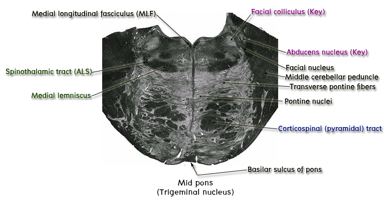

5 ระดับ middle part of pons หรือระดับ trigeminal nerve root
Key structure ของระดับนี้ที่ต้องชี้แสดงคือ trigeminal nerve root ซึ่งยึดติดกับ brainstem ระดับ middle part of pons นี้โดยจะเห็นเป็น nerve fibers สีเข้มที่ทอดอยู่ใน lateral part ของ basilar part เข้าสู่ lateral part ของ tegmentum จากนั้นให้ชี้แสดง nuclei ที่สำคัญ 2 nuclei ของ trigeminal nerve คือ trigeminal motor nucleus ซึ่งเป็น oval area ใส ๆ ขนาดใหญ่ อยู่ทางด้าน medial กว่า trigeminal nerve และ principal (main) sensory nucleus ซึ่งมีขนาดเล็กกว่าและอยู่ถัดไปทาง lateral กว่า trigeminal nerve
ให้ชี้แสดง superior cerebellar peduncle ทั้ง 2 ด้านที่เชื่อมกันด้วย superior medullary velum ทำหน้าที่เป็น roof ของ fourth ventricle ใน section ระดับนี้

ให้ชี้แสดง medial lemniscus ที่ยังคงอยู่ในตำแหน่งเดิมแต่ทอดตัวตามแนวนอนมากขึ้นและเลื่อนไปอยู่ทาง lateral ของ tegmentum มากขึ้น